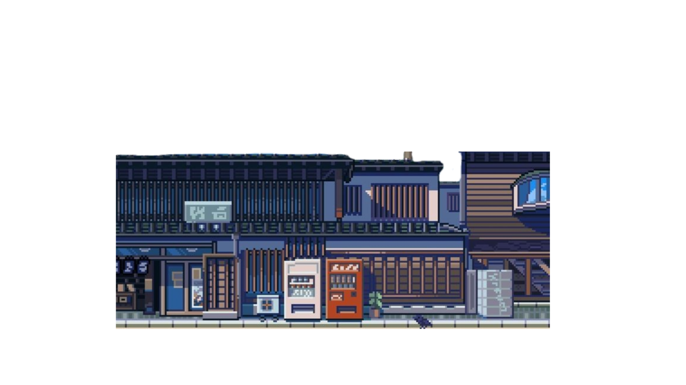
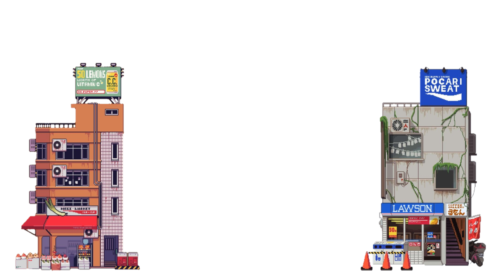
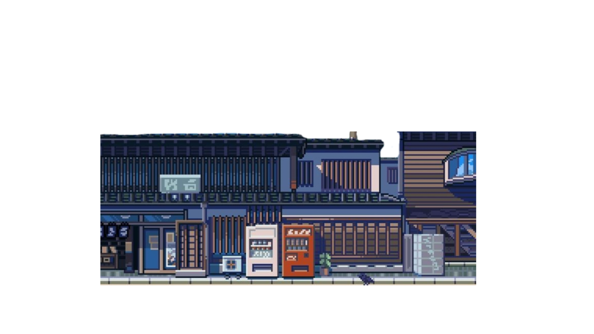
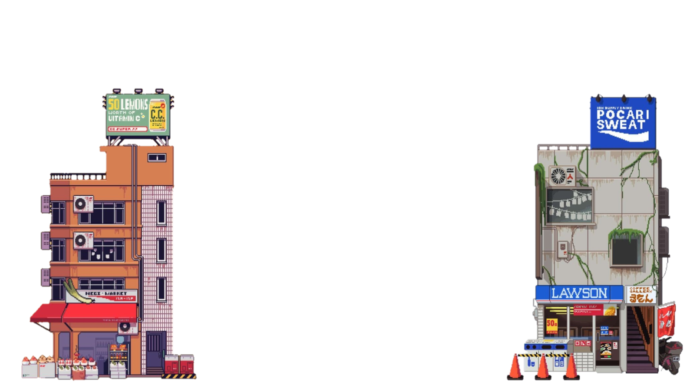

Hotels
 



Daftar Kamar
otel adalah sebuah tempat yang menyediakan akomodasi sementara bagi tamu, baik untuk tujuan perjalanan bisnis, liburan, atau kebutuhan lainnya. Hotel biasanya menawarkan berbagai fasilitas seperti kamar tidur yang nyaman, layanan keber makanan dan minuman,
serta layanan tambahan seperti kolam renang, pusat kebugaran, dan ruang pertemuan. Tipe dan kategori hotel bervariasi, mulai dari hotel budget hingga hotel mewah bintang lima, tergantung pada kebutuhan dan anggaran tamu.
elain itu, lokasi hotel sering kali menjadi faktor penentu dalam memilih tempat menginap, seperti hotel di pusat kota yang cocok untuk pebisnis, hotel dekat pantai yang ideal untuk wisatawan, atau hotel di pegunungan yang menawarkan pe khususmandangan
Industri perhotelan terus berkembang dengan teknologi modern, memungkinkan tamu untuk memesan kamar secara online, menikmati layanan digital, dan mendapatkan pengalaman yang lebih personal. Hotel juga beradaptasi dengan kebutuha khusus tamu, s
e perti menyediakan fasilitas ramah keluarga, layanan inklusif bagi penyandang disabilitas, atau akomodasi ramah hewan peliharaan. Dengan peran yang begitu beragam, hotel menjadi bagian integral dari pengalaman perjalanan dan pariwisata di seluruh
dunia.